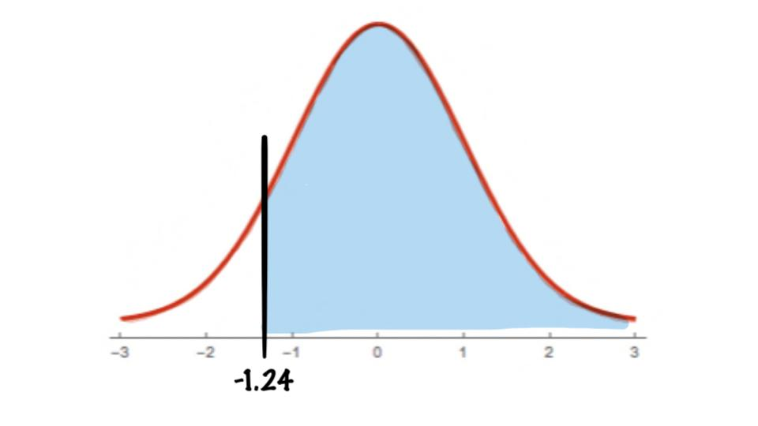
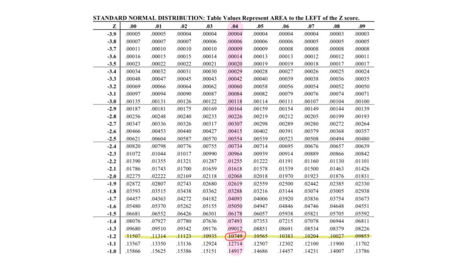

Find the area under the standard normal distribution curve to the right of \(z=-1.24\)

To find this we need to first use our table to find the area to the left of \(z=-1.24\), then subtract that value from 1.
So first we use our table.

And we see that \(P(z<-1.24)=0.10749\), so now we subtract this value from 1, i.e.
\[P(z>-1.24)=1-P(z<-1.24)=1-0.10749=0.89251\]